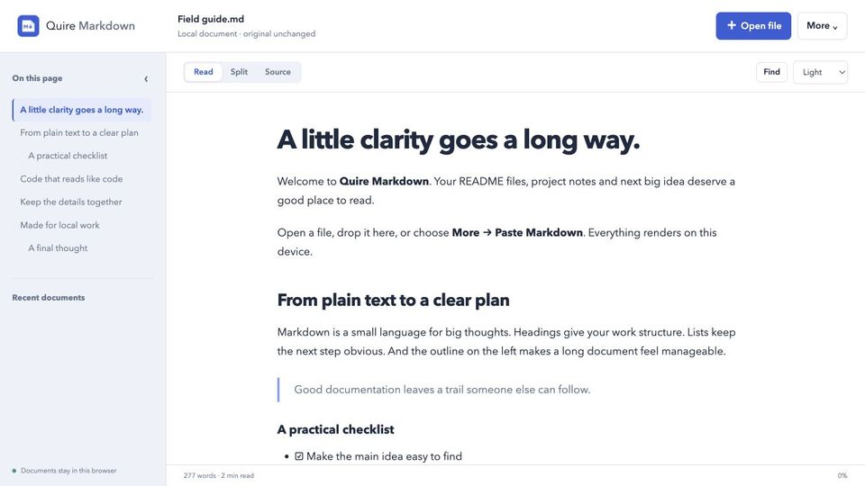

How to print a Markdown file or save it as a PDF
Short answer: printing the raw .md file gives you the Markdown characters, not formatting. Render it first, then print or export. The quickest route is a browser viewer plus Chrome’s Save as PDF. For repeatable conversions, use VS Code’s Markdown PDF extension, Typora’s export, or pandoc.
Updated 15 October 2026. Third-party steps follow each tool’s documentation.
From Chrome
Quire Markdown is our extension, free on the Chrome Web Store. It has a print layout designed for paper.
- Open the file formatted
Open the .md file in Quire Markdown with Open file, or drop it onto the viewer.
- Choose Print
Open the viewer’s More menu and choose Print / save as PDF.
- Pick Save as PDF
In Chrome’s print dialog, set Destination to Save as PDF, or choose a printer.
- Save
Click Save (or Print) and choose where to put the file.
The printout includes only the rendered document. The toolbar, outline and copy buttons are left out, long code lines wrap instead of being cut off, tables use the full page width, and level-2 headings aren’t left stranded at the bottom of a page.
Images in the document aren’t loaded, so they print as “[Image not loaded: …]” labels. Mermaid diagrams and math print as their source. If you need those, use one of the tools below.

VS Code: the Markdown PDF extension
VS Code has no PDF export built in. The Markdown PDF extension adds commands such as Markdown PDF: Export (pdf) to the Command Palette and the right-click menu. It also exports HTML, PNG and JPEG.
- It uses an installed Chrome, Edge or Chromium to make the PDF, and downloads a Chromium build on first use if it finds none.
- It draws Mermaid diagrams. By default it loads the Mermaid library from a CDN, so that part needs a connection.
Typora
Typora exports to PDF from File › Export › PDF, using its current theme. It can export HTML and images itself, and other formats such as Word through pandoc. Typora costs $14.99 after a 15-day trial.
pandoc
pandoc is a free command-line converter. The simplest command is:
pandoc notes.md -o notes.pdf
By default pandoc makes PDFs through LaTeX, which must be installed separately and produces a typeset, academic look. To use HTML and CSS instead, name an HTML-based engine, for example pandoc notes.md --pdf-engine=weasyprint -o notes.pdf with WeasyPrint installed. pandoc suits scripts and batch jobs. For a single file, the options above are quicker.
Questions
Can I convert Markdown to PDF without uploading it?
Yes. Every method on this page runs on your computer: Chrome’s Save as PDF, VS Code, Typora and pandoc. The one exception is the Markdown PDF extension’s default Mermaid setting, which fetches the Mermaid library (not your document) from a CDN.
Why are the images missing from my PDF?
If you printed from Quire Markdown, that is expected: it never loads images in a document. Use VS Code with the Markdown PDF extension, Typora or pandoc when the PDF needs its pictures.